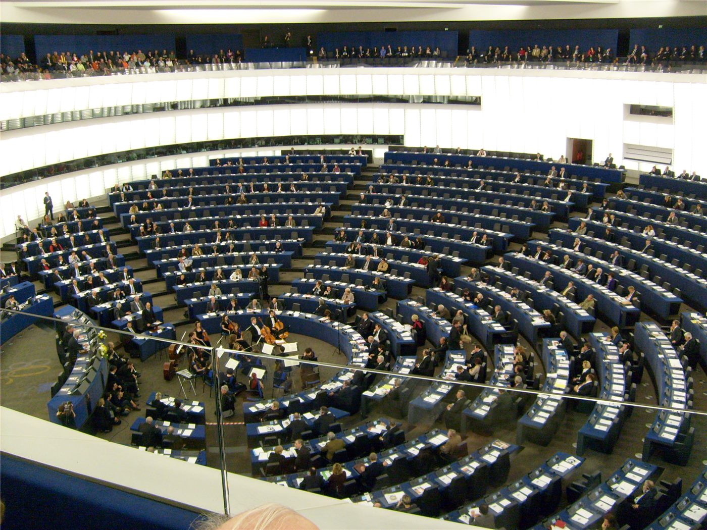

독일 작센안할트 주선거, AfD 44%대 1위… 전후 첫 극우 주정부 성립 여부 기로

독일 공영방송 ARD와 ZDF가 6일(현지시간) 발표한 작센안할트주 의회 선거 출구조사에서 '독일을 위한 대안(AfD)'이 44.1~44.5%의 득표율로 1위에 올랐다. 이는 이 정당이 주 단위 선거에서 기록한 가장 높은 수치다.
광고 문의 · 300×250프리드리히 메르츠 총리의 기민련(CDU)은 18.5%로 크게 뒤졌고, 사회민주당(SPD)과 녹색당은 원내 진입 기준선을 넘긴 것으로 집계됐다. 좌파 포퓰리즘 정당 BSW는 기준선 부근에 걸쳐 있어, 최종 개표 결과에 따라 원내 진입 여부가 갈릴 전망이다.
1위와 집권은 다른 문제
득표 1위가 곧 주총리 배출을 뜻하지는 않는다. 독일의 주의회는 의원 과반의 지지를 얻은 후보를 주총리로 선출하는 구조이며, 출구조사대로라면 AfD는 단독으로 과반에 이르지 못한다. 결국 다른 정당과의 연립이 전제되는데, 기성 정당들은 AfD와 연정을 맺지 않는다는 이른바 '방화벽' 원칙을 공식 입장으로 유지해 왔다.
변수는 BSW다. 이 정당이 기준선을 넘고 AfD와 산술적으로 과반을 이룰 경우, 전후 독일에서 처음으로 극우 정당이 주정부를 주도하는 상황이 열린다. 반대로 BSW가 원내 진입에 실패하면 기민련을 축으로 한 다당 연정 논의가 불가피해진다.
동부 주(州)에서 반복된 흐름
작센안할트는 옛 동독 지역에 속한 인구 210만 명 규모의 주다. 통일 이후 인구 유출과 산업 재편이 이어졌고, 최근 몇 년 사이 에너지 가격 상승과 이주 문제를 둘러싼 불만이 정치적 균열로 이어져 왔다는 분석이 반복돼 왔다.
이번 결과는 2024년 이후 동부 주 선거에서 나타난 흐름의 연장선에 있다는 평가가 나온다. 다만 40%를 넘긴 득표율은 그 흐름 안에서도 뚜렷하게 높은 수치이며, 연방 차원의 정치 지형에 대한 해석을 바꿔 놓았다는 지적이 나온다.
메르츠 연방정부에 남는 부담
이번 선거는 메르츠 총리가 이끄는 연방 연립정부에도 부담으로 작용한다. 집권 기민련이 20%에도 못 미치는 결과를 받아든 만큼, 이민·에너지·재정 정책을 둘러싼 당내 논쟁이 다시 불붙을 가능성이 거론된다.
연방정부는 그동안 산업 전기요금 부담 완화와 국경 관리 강화를 병행하는 방식으로 대응해 왔다. 그러나 지역 유권자에게 그 효과가 체감되지 않았다는 점이 이번 결과의 배경으로 지목된다.
아시아에서 지켜볼 지점
유럽 정치의 무게중심 이동은 아시아 경제에도 시차를 두고 닿는다. 독일은 유럽연합 최대 경제이자 한국·중국·대만 기업의 주요 교역·투자 상대다. 산업정책과 보조금, 통상 규범을 둘러싼 독일 국내 논의가 바뀌면 유럽연합 차원의 규제 속도도 함께 조정되는 경우가 많았다.
특히 전기차와 배터리, 태양광 부문의 역외 조달 규정, 그리고 공급망 실사 지침의 적용 강도는 아시아 제조업체가 직접 체감하는 항목이다. 주 단위 선거 하나가 이를 곧바로 바꾸지는 않지만, 연방 정치의 우선순위를 이동시키는 신호로는 읽힌다.
제3의 시각: 숫자보다 산술
본지는 이번 결과를 '득표율의 사건'이 아니라 '산술의 사건'으로 본다. 44%라는 수치는 상징적이지만, 실제로 정책이 달라지는 지점은 주의회에서 과반을 만드는 데 성공하는지 여부다. 방화벽 원칙이 유지되는 한 1위 정당이 야당으로 남는 구도도 충분히 가능하다.
독자가 지켜볼 지점은 세 가지다. BSW의 원내 진입 여부, 기민련이 어떤 조합의 연정을 제시하는지, 그리고 주총리 선출 투표가 몇 차 투표까지 가는지다. 독일 정치에서 연정 협상은 통상 수 주에서 수 개월이 걸리며, 선거 당일의 숫자보다 그 과정이 결과를 더 많이 결정해 왔다.
· https://www.aljazeera.com/news/2026/9/6/far-right-afd-wins-vote-in-germanys-saxony-anhalt-state-exit-polls
· https://www.cnbc.com/2026/09/06/germanys-far-right-afd-seeks-landmark-state-victory.html